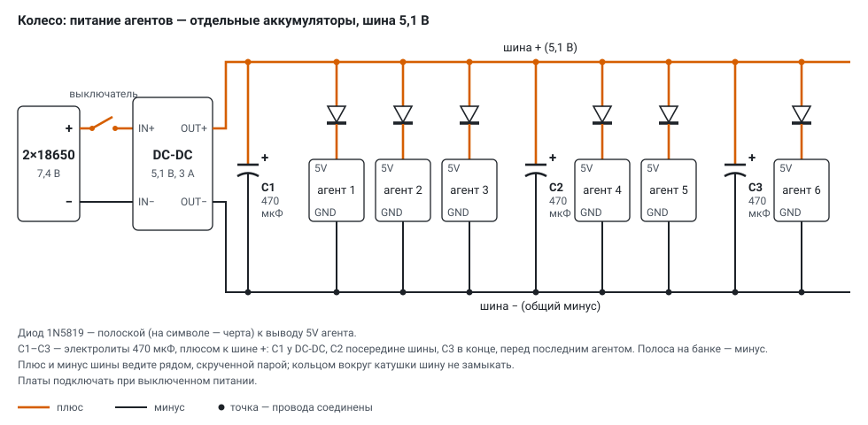
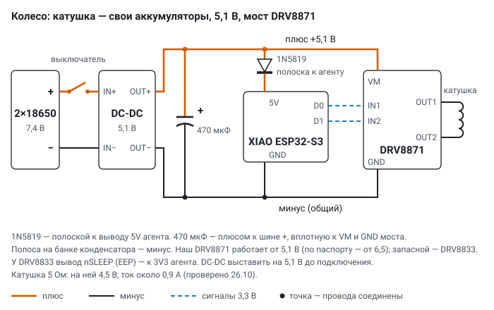
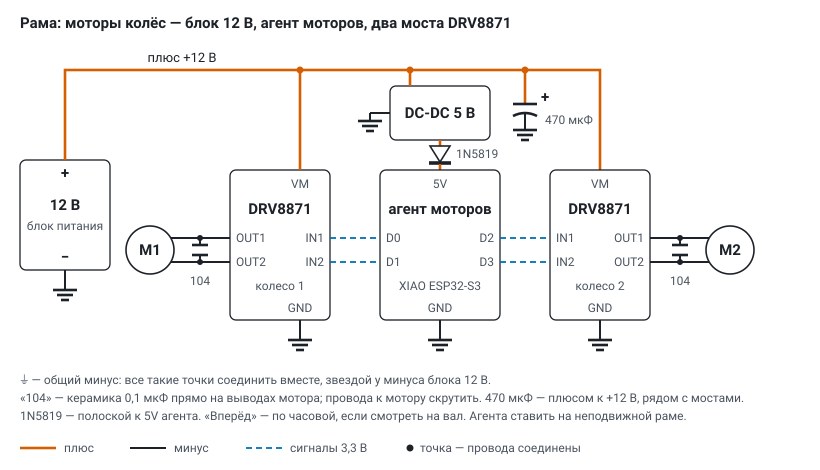

Схемы подключения: колесо, моторы и сеть
На установке три контура питания, проводами между собой не связанных: агенты говорят с сервером по Wi‑Fi, общий минус между контурами не нужен.
| контур | где | питание | что управляет |
|---|---|---|---|
| шина агентов | на колесе | свои 2×18650 → DC‑DC 5,1 В | ничего: аккумуляторы и выключатель |
| катушка | на колесе | свои 2×18650 → DC‑DC 5,1 В | агент катушки (роль M) через мост DRV8871 |
| моторы | на раме | блок 12 В; агенту — DC‑DC 5 В | агент моторов №10 (роль M) через два DRV8871 |
Общая схема установки#

- Колёса стоят друг напротив друга, у каждого своя ось на упоре с подшипником и свой мотор (M1, M2). Между колёсами на неподвижной раме — статические: №8 и телефон №9.
- На каждом колесе — два независимых контура: шина агентов (6 плат) и катушка со своим питанием. Шина вдоль обода не замкнута в кольцо.
- Колесо 1: агенты №3, №5, №6 (датчик обода ICM-42688), №7 (магнитометр MLX90393), №11, №12; катушкой управляет №13. Колесо 2: №14–№19; агента катушки пока нет.
- Моторы управляются с рамы: агент №10, два моста DRV8871, блок 12 В. С сервером все агенты говорят по Wi‑Fi через роутер опыта (в центре схемы) — проводов между колёсами, рамой и сервером нет; ноутбук-сервер подключён к роутеру кабелем. Настройки — раздел «Сеть опыта (Wi‑Fi)» ниже.
Обозначения на схемах. Оранжевая толстая линия — плюс, тёмная — минус, синий пунктир — сигналы 3,3 В от агента к мосту, точка — провода соединены (без точки линии просто пересекаются). Подписи + и − стоят у каждого вывода питания.
Полярность деталей.
- Диод 1N5819: черта на символе = полоска на корпусе = катод. Полоской — к выводу 5V агента, другим концом — к плюсу питания. Наоборот — агент не включится (диод закрыт), но и не сгорит.
- Электролит 470 мкФ: полоса с минусами на банке — минус, длинная нога — плюс. Плюсом — к плюсу питания. Наоборот электролит греется и может вздуться.
- Керамика 104 (0,1 мкФ) полярности не имеет.
Зачем диод перед агентом: питание с USB при прошивке по кабелю не уходит обратно в шину, а перепутанный плюс не сожжёт плату. Падение на 1N5819 около 0,3 В — на 5V агента приходит около 4,8 В, этого XIAO ESP32‑S3 хватает.
Колесо: питание агентов по шине#


- Два 18650 последовательно (7,4 В, заряженные — 8,4 В) → выключатель → понижающий DC‑DC на 5,1 В → шина вдоль обода: плюс и минус.
- Каждый агент: плюс шины → 1N5819 (полоской к агенту) → вывод 5V; GND агента — прямо на минус шины.
- Ток: агент в работе берёт до 0,3 А, при включении Wi‑Fi — короткие броски. Шесть агентов — 1,5–2 А, DC‑DC на 3 А идёт с запасом.
- Электролиты на шине — три по 470 мкФ, плюсом к шине +: C1 у выхода DC‑DC, C2 посередине шины (после третьего агента), C3 в конце, перед последним агентом. Бросок тока платы берётся из ближнего конденсатора, а не тянется по всей длине шины от DC‑DC, — напряжение у дальних плат проседает меньше.
- Плюс и минус шины ведите рядом, скрученной парой. Кольцом вокруг катушки шину не замыкать: замкнутый виток вдоль тороида ловит поле катушки и сам становится витком.
- Порядок: DC‑DC выставить на 5,1 В без нагрузки (мультиметр на OUT+ / OUT−) → выключить → подключить шину → включить.
Колесо: управление катушкой#


- Свой блок 2×18650 и свой DC‑DC 5,1 В, отдельно от шины агентов: броски тока катушки не попадают в питание датчиков на ободе.
- С одного DC‑DC — и мост (вывод VM), и агент катушки (через 1N5819, полоской к агенту). Минус общий: DC‑DC, электролит, GND моста, GND агента.
- Мост — DRV8871, такой же, как у моторов. По паспорту TI он работает от 6,5 В (ниже 6,1–6,4 В отключает ключи), но наши модули работают и от 5,1 В — проверено на катушке (ниже). Это вне паспорта: если поле начнёт пропадать при севших аккумуляторах, первым менять мост на DRV8833 (2,7–10,8 В, до 1,5 А на канал) — входы и таблица у него те же, прошивка не меняется.
- Агент: D0 → IN1, D1 → IN2; выходы моста OUT1 / OUT2 — на концы катушки. У DRV8871 других выводов управления нет; у запасного DRV8833 вывод nSLEEP (на некоторых модулях EEP) — к 3V3 агента, если модуль не подтянул его сам, иначе мост молчит.
- Электролит 470 мкФ — вплотную к VM и GND моста.
- Ток: тороид в один слой (около 5 Ом) — около 0,9 А (на катушке 4,5 В), поле внутри около 1,5 мТл; в два слоя (около 11 Ом) — около 0,45 А.
- Управление: агент в роли M, место «катушка» своего колеса. Сервер (
server/coils.py) раз в секунду шлётMOT a=±доля b=0 r=5000 w=5: знак — направление поля (+ / −), 1000 — постоянный ток; нет команды 5 с — агент снимает ток. На основном экране — слой «поле катушек» и строка катушки в колонке колеса (выкл / + / −). - Проверено 26.10.2026 на агенте катушки №13 с катушкой 5 Ом: на выводах катушки ±4,5 В, знак меняется при + / − (100 %, циклы по 15–20 с), ток около 0,9 А; агент на связи, не перезагружался.
Аккумуляторы: INA219#
Каждый контур на колесе (шина агентов и катушка) — со своим INA219: напряжение пары 18650 и ток раз в секунду. По ним сервер видит заряд, сколько осталось при нынешнем токе и когда пару пора менять; программа сама встаёт на паузу, если пара села (server/battery.py, прошивка battery.h).
| вывод INA219 | куда |
|---|---|
| VIN+ | от выключателя — плюс аккумуляторов |
| VIN− | на IN+ DC‑DC |
| GND | общий минус (минус аккумуляторов = IN− DC‑DC: у LM2596 вход и выход минус общий) |
| VCC | 3V3 агента (не 5 В: подтяжки I²C на модуле — к VCC, ESP32 — 3,3 В) |
| SDA / SCL | D4 / D5 агента |
- Весь ток контура идёт через шунт (0,1 Ом на модуле): VIN+ и VIN− — проводом того же сечения, что основной (18 AWG). На шунте при 1,4 А — около 0,14 В, работе не мешает. Предел — 3,2 А и 26 В.
- Шину колеса читает агент на шине: колесо 1 — №6 (на тех же D4/D5 — его ICM-42688, адрес 0x68; у INA219 — 0x40, перемычки A0/A1 не паять), колесо 2 — любой из №14–№19. Катушку — агент катушки (№13): у него D0/D1 — мост, D4/D5 свободны.
- Ставить до DC‑DC, а не после: заряд показывает напряжение аккумуляторов, а не 5,1 В шины.
- На основном экране — в заголовке колеса: 🔋 шина 7,62 В · 64 % · ≈ 52 мин; 🪫 «пора менять» — 6,8 В или меньше 15 мин; «сели» — 6,5 В (3,25 В на ячейку под нагрузкой): программа встаёт на паузу перед следующим шагом, «▶ Продолжить» — после замены. Ёмкость пары — заданная (2500 мА·ч) или измеренная: пара разрядилась от полной до «пора менять» — израсходованное записывается как её ёмкость.
Рама: моторы колёс#


- Блок 12 В: плюс — на VM обоих мостов DRV8871 (6,5–45 В, до 3,6 А, предел тока задаёт резистор на модуле) и на вход DC‑DC 5 В агента моторов. Электролит 470 мкФ на +12 В рядом с мостами.
- Агент моторов №10 стоит на неподвижной раме: D0 → IN1, D1 → IN2 моста колеса 1; D2 → IN1, D3 → IN2 моста колеса 2. Питание агента — DC‑DC 5 В → 1N5819 (полоской к агенту) → 5V.
- Моторы 36GP‑555 (12 В, редуктор 112 об/мин) — на OUT1 / OUT2 своих мостов. Керамика 104 прямо на выводах мотора гасит помехи щёток; провода к мотору скрутить.
- Все минусы (⏚ на схеме) — блок, мосты, DC‑DC, агент — соединить звездой у минуса блока 12 В, а не цепочкой от моста к мосту.
- «Вперёд ▶» — по часовой стрелке, если смотреть на вал спереди. Если моторы стоят зеркально и «вместе» крутит колёса в разные стороны — у второго поменять провода OUT1 / OUT2.
- Режимы, разгон, сторож и обратная связь по оборотам — в sensors.md, раздел «Моторы колёс».
Сеть опыта (Wi‑Fi)#
Своя сеть только для установки: в ней агенты, телефон и ноутбук-сервер, чужих устройств нет. Эфир — тоже часть опыта (CSI, кадры соседей, обратный шум), поэтому сеть настроена так, чтобы он был ровным и предсказуемым.
агенты №3-№19 ── Wi-Fi 2,4 ГГц, канал 6 ──┐
телефон №9 ───── Wi-Fi ───────────────────┤
│
роутер Mango ── LAN ── Cat6 3 м ── USB-RJ45 ── ноутбук-сервер
(WAN пустой) (интернет — свой Wi-Fi)| что | как настроено | зачем |
|---|---|---|
| роутер | GL.iNet GL‑MT300N‑V2 «Mango», питание micro‑USB 5 В | маленький, только 2,4 ГГц — то, что умеет ESP32 |
| имя и пароль сети | свои, не заводские (заводской пароль у всех Mango одинаковый); WPA2‑PSK | чужие платы и телефоны в сеть опыта не попадают |
| где хранятся | только в secrets/wifi.ini на ноутбуке (вне git) → tools/gen_secrets.py → прошивка | в репозитории, документах и на GitHub их нет |
| канал | 6, постоянный (не «авто») | соседние сети стоят на 1 и 9–11 — шестой между ними; роутер не прыгает по каналам посреди опыта |
| стандарт у агентов | только 802.11 b/g, сон радио выключен | CSI приходит на каждый пакет; шум приёмника идёт в генератор непрерывно |
| ноутбук | порт LAN роутера ↔ кабель Cat6 3 м ↔ адаптер UGREEN USB 3.0 → RJ45 (AX88179) | сервер не занимает эфир агентов; кабель не рвётся, когда в эфире много кадров |
| порт WAN | пустой | сеть опыта без выхода в интернет; ноутбук ходит в интернет по своему Wi‑Fi, тип сети в Windows менять не пришлось |
| запасная сеть | прежний домашний роутер: ssid2 / password2 в том же wifi.ini | основная 40 с не пускает — плата уходит на запасную и не теряется; через 2 мин, потом раз в 10 мин (когда стоит) пробует основную; в телеметрии net 0 / 1 |
Как агент находит сервер. Адреса в прошивке нет: сервер раз в 2 с рассылает маяк W2SRV 5005 на UDP 5006, агент берёт адрес отправителя.
| порт | направление | что |
|---|---|---|
| UDP 5005 | агенты → сервер | телеметрия, простые, кусочки шума |
| UDP 5006 | сервер → все (широковещательно) | маяк W2SRV 5005 |
| UDP 5007 | сервер → агент | команды CFG, MOT, роли; агент подтверждает номером cid |
| TCP 8090 | браузер, телефон, агенты → сервер | основной экран, приём телефона, образ прошивки для OTA |
Один эфир на всех. ESP‑NOW (пульс соседей 10/с, кадры группового режима и рассеяния) идёт на том же канале 6, что и Wi‑Fi: агенты не перестраивают радио. Отсюда два правила:
- CSI брать с пульса соседей (
hb5–20,ping0). Пинг роутера 100/с от нескольких плат переполнял очередь передачи и давал «зомби» (плата на связи, а пакетов нет); пинг — только как отдельный шум, не выше 20/с и короткими опытами. - Серверу и телефону эфир не занимать сверх нужного: ноутбук — кабелем, телефон шлёт данные пачками, 4 раза в секунду.
Телефон — в той же сети: служба приложения сама находит сервер по маяку и шлёт по HTTP на порт 8090. Если Wi‑Fi нет, его можно подключить кабелем USB: сервер раз в 15 с делает adb reverse tcp:8090, и пакеты идут по кабелю.
Если сеть меняется. Новое имя или пароль — в secrets/wifi.ini, затем python tools/gen_secrets.py и прошивка по воздуху (python tools/ota.py all): платы, которые новую сеть ещё не знают, держатся за запасную, поэтому опечатка в пароле не требует перешивки по USB. Канал на роутере менять вместе с проверкой соседей (анализатор Wi‑Fi на телефоне): шестой выбран по замеру.